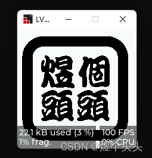

【开源】ESP32墨水屏桌面小屏幕：DIY一个可爱的嵌入式项目
首先简要介绍一下这个项目：
这个项目的开源主要包括硬件，固件和软件两部分，外壳后面如果做了也会开源出来。该项目主要是参考了以下教学视频。
链接：桌面小屏幕实战教学
其中硬件部分改动不大，主要是把USB驱动改成了TypeC + CP2102，其他部分没有太大改动。
软件部分全部是自主编写，这部分与上面视频中的开源代码完全不同，各位可以作为参考。
说明：做这个项目主要是为了把我这段时间学的东西整合到一起，项目本身的难度并不大，适合新手入门。
项目开源仓库：https://github.com/Jozen-Lee/Desk_Screen
1. 项目简介
软件版本
PlatformIO：6.1.5
SquareLine Studio： 1.1.1
Visual Studio：2022
嘉立创EDA：专业版1.9.23
固件版本
lvgl：8.3.4
主要外设
ESP32-S：带有ESP32主控 + 蓝牙 + WIFI
ePaper：1.54寸黑白墨水屏，采用SPI通信
ft6336：触摸屏，采用I2C通信
蜂鸣器：PWM驱动
USB：TypeC + CP2102
物料清单
这里只给出核心的部件，电阻电容二极管这些可参考PCB原理图中的具体型号。
| 外设类别 | 型号 | 数量 | 购买链接 |
|---|---|---|---|
| 主控模块 | ESP32-S | 1 | ESP32-S模组WiFi+蓝牙ESP32串口转WiFi模块PCB开放板 |
| 电子纸触摸屏 | GDEY0154D67-T03 | 1 | 电子纸触摸屏 |
| USB芯片 | CP2102-GMR | 1 | CP2102-GMR |
| 锂电池充电管理模块 | TP4056 | 1 | 1A锂电池充电IC |
| 线性稳压器 | AMS1117-3.3 | 1 | 正 Vin=18V Vout=3.3V 1A 60dB@(120Hz) |
| 蜂鸣器 | MLT-5020 | 1 | MLT-5020 |
| TypeC接插件 | TYPEC-324-BCP24 | 1 | Type-C 母座 卧贴 |
| 轻触开关 | TS24CA | 2 | 蓝牙耳机轻触开关 |
| 锂电池3.7V | 301030 | 1 | 蓝牙耳机电池小体积大容量 |
建议TypeC改为以下的封装，比较便宜好焊，PCB图做简单修改即可。
KH-TYPE-C-16P
2. 硬件部分
这部分对应开源仓库中的Hardware，整体电路比较简单，这里只提一些关键点。
自动下载电路
CP2102是可以设计自动下载电路的，原理图如下：（参考稚晖君的开源项目）
本项目虽然使用了CP2102，但当时设计的时候没考虑到这个，所以是采用了手动下载的方式。
下载时需要拉低GPIO0再按复位键进行下载。(右方的两个按键)

屏幕接插口
这个属于是设计上的失误，当时买的外设是墨水屏+触摸屏一体化模块，但是两个接插件的相对位置存在误差，导致连接的时候触摸屏FPC线需要弯曲。
其余可优化的细节
- 缩小PCB尺寸（当前的尺寸明显是过大的）
- 添加锁紧开关（因为是锂电池供电，没有开关的话每次只能通过拔电池来断电，很麻烦）
- 添加电源指示灯（板子上目前只有锂电池充放电指示灯）
- 优化供电电路（目前USB的5V供电只拿来给锂电池充电，所以只插USB不接电池板子是无法正常工作的）
3. 固件部分
这部分对应开源仓库中的Firmware，开发平台选用的是vscode + PlatformIO。
项目中涉及到了很多外设的驱动库，原则上是尽量选用Platform平台上有的开源库，因为移植和使用都比较简单。不过也要考虑适配性，开源库不是万能的，大部分时候都需要根据使用的外设提供的demo，来修改开源库的参数或者源码。
首先介绍一下使用到的库和相关的配置。
epd_libraries
官方链接：https://github.com/Bodmer/EPD_Libraries
我使用的是其中的epd1in54库，对应了我所使用墨水屏的尺寸。
我根据官方demo修改了库中的刷屏源码。不修改的话，显示的图像会很模糊。
ft6336
这部分使用的是Platform Libraries中的htcw_ft6336库
主要修改的部分是GPIO口的配置和初始化的配置。
关键点：虽然pins_arduino.h中有I2C和SPI的引脚配置，但我们完全是可以根据我们的需求进行修改的，ESP32芯片也是支持的。
/* init code */
bool initialize() {
if(!m_initialized) {
/* Device Reset */
gpio_set_level((gpio_num_t)pin_res, 0);
vTaskDelay(50 / portTICK_PERIOD_MS);
gpio_set_level((gpio_num_t)pin_res, 1);
vTaskDelay(100 / portTICK_PERIOD_MS);
/* Init I2C */
m_i2c.begin(33, 32, 10000);
vTaskDelay(100 / portTICK_PERIOD_MS);
device_gpio_config();
/* Set normal mode */
uint8_t w_data=0;
reg(REG_DEVICE_MODE, w_data);
/* set touch availd value to 22, smaller to more sensitive */
w_data=22;
reg(REG_THRESHHOLD, w_data);
/* set active period 12 - 14 */
w_data=14;
reg(REG_TOUCHRATE_ACTIVE, w_data);
/* Set interrupt mode */
w_data = 0;
reg(REG_INTERRUPT_MODE, w_data);
m_initialized=true;
}
return true;
}
lvgl
这里引入lvgl主要是方便UI的开发以及链接显示屏与触摸屏的数据，库的相关配置可以参考我之前的博客：【LVGL学习笔记】（四）PlatformIO + LVGL8.3配置
因为墨水屏无法像LCD那样子不断刷新数据，所以在配置的时候，需要修改屏幕缓存更新的逻辑。
我采用的逻辑如下：
- 根据lvgl的数据刷新主控内部的缓存空间
- 每次屏幕被按下的时候，将主控的缓存一次性发过去给墨水屏的RAM并刷新显示。
/* 这里只给出核心部分代码，其余的源码请参考开源仓库中的代码 */
uint8_t img_buf[MY_DISP_HOR_RES * MY_DISP_VER_RES / 8];
Paint paint(img_buf, MY_DISP_HOR_RES, MY_DISP_VER_RES);
static void disp_flush(lv_disp_drv_t * disp_drv, const lv_area_t * area, lv_color_t * color_p)
{
uint32_t w = (area->x2 - area->x1 + 1);
uint32_t h = (area->y2 - area->y1 + 1);
for(int i = area->y1; i <= area->y2; i ++){
for(int j = area->x1; j <= area->x2; j ++){
if(color_p[(j-area->x1) + (i-area->y1)*w].full == 0xffff) paint.DrawPixel(j, i, UNCOLORED);
else paint.DrawPixel(j, i, COLORED);
}
}
lv_disp_flush_ready(disp_drv);
}
void Display::refresh(void)
{
epd.SetFrameMemory(paint.GetImage());
epd.DisplayFrame();
}
lvgl的图片与字体
lvgl官方提供了相关的网址，可以便捷地使用。
图片转换：Online Image Converter
字库生成；Online Font Converter
字库的相关配置可以参考这篇博客：lvgl界面库支持汉字显示
- 在设计UI的时候，使用的字体类别尽量少，因为每启用一类字体，都需要引入一个字库，需要比较多的内存。
- lvgl中带有中文的支持，字库类别是LV_FONT_SIMSUN_16_CJK，但是其中只有少量的中文字符，所以最好还是自己生成汉字字库。
BluetoothSerial&Wifi
ESP32-S内置有天线，可以支持蓝牙和WiFi通信。两者共用一根天线，但通信协议不同，所以两者是可以支持共存的，但不可以同时使用。详细的说明可以参考官方手册中的说明：RF共存
因为本项目相对简单，所以我没有配置共存相关的东西。因此，在二次开发的时候要注意，项目中的蓝牙和wifi的库都可以正常使用，但是使用前都需要将另一方关闭，否则程序会崩溃。
/* 蓝牙驱动核心代码 */
void Bluetooth_Event(esp_spp_cb_event_t event, esp_spp_cb_param_t* param) {
/* the first event is from master, the second event is from slave */
if (event == ESP_SPP_OPEN_EVT || event == ESP_SPP_SRV_OPEN_EVT) {
Serial.write("bluetooth connection successful!\r\n");
} else if (event == ESP_SPP_CLOSE_EVT) {
Serial.write("bluetooth disconnect successful!\r\n");
} else if (event == ESP_SPP_DATA_IND_EVT) {
uint16_t len = 0;
memset(rx_buff, '\0', BLUETOOTH_MAX_LEN);
while (SerialBT.available()) {
if (len < BLUETOOTH_MAX_LEN) {
rx_buff[len] = char(SerialBT.read());
len++;
}
}
update_flag = true;
rx_len = len;
Serial.println(rx_buff);
} else if (event == ESP_SPP_WRITE_EVT) {
}
}
void Bluetooth::init(void) {
/* Register callback function */
SerialBT.register_callback(Bluetooth_Event);
/* Start bluetooth */
stop();
}
void Bluetooth::start(void) {
if (BLT_MASTER_MODE) {
SerialBT.begin("ESP32_MASTER", true);
SerialBT.connect(address);
} else {
SerialBT.begin("ESP32_SLAVE");
}
}
void Bluetooth::stop(void) { SerialBT.end(); }
/* WiFi驱动核心代码 */
void Network::init(String ssid, String password) {
/* enable wifi scan */
#if 0
Serial.println("scan start");
int n = WiFi.scanNetworks();
Serial.println("scan done");
if (n == 0) {
Serial.println("no networks found");
} else {
Serial.print(n);
Serial.println(" networks found");
for (int i = 0; i < n; ++i) {
Serial.print(i + 1);
Serial.print(": ");
Serial.print(WiFi.SSID(i));
Serial.print(" (");
Serial.print(WiFi.RSSI(i));
Serial.print(")");
Serial.println((WiFi.encryptionType(i) == WIFI_AUTH_OPEN) ? " " : "*");
delay(10);
}
}
Serial.println("");
#endif
Serial.print("Connecting: ");
Serial.print(ssid.c_str());
Serial.print(" @");
Serial.println(password.c_str());
WiFi.begin(ssid.c_str(), password.c_str());
while (WiFi.status() != WL_CONNECTED) {
delay(500);
Serial.print(".");
}
Serial.println("");
Serial.println("WiFi connected!");
Serial.println("IP address: ");
Serial.println(WiFi.localIP());
/* config world time */
configWorldTime();
}
ledc
EPS32有基础的PWM驱动库，也有ledc，mcpwm等经过了二次封装的PWM驱动库。
官方的本意是提供更便捷的驱动API，ledc用了LED灯光亮度的控制，mcpwm用于电机驱动。但是我们完全可以用这些库来控制其他需要PWM信号进行驱动的外设。本项目用其来驱动无源蜂鸣器。
无源蜂鸣器没有正负极之分，所以蜂鸣器的发生效果只受PWM的频率影响，不受占空比影响。因此我们将占空比设置为定值即可。
该项目使用蜂鸣器实现了音乐播放/暂停，切换等操作。
void music_timer_cb(void* arg) {
if (*_tune && music_playing) {
if(*_tune != -1) ledcWriteTone(BEEP_PWM_CHANNEL, *_tune);
_tune++;
esp_timer_start_once(music_timer, BASIC_BEAT_TIME * 1000 * (*_beat));
_beat++;
} else if (!*_tune && loop_flag) {
_tune = _tune_record;
_beat = _beat_record;
music_playing = true;
esp_timer_start_once(music_timer, 10);
// Serial.println("music loop!");
} else {
music_playing = false;
ledcWrite(BEEP_PWM_CHANNEL, 0);
// Serial.println("music pause!");
}
}
void Beep::init(void) {
/* Set freq and resolution to default value */
ledcSetup(BEEP_PWM_CHANNEL, 4000, 8);
ledcAttachPin(BEEP_PIN, BEEP_PWM_CHANNEL);
stop();
/* register music timer */
esp_timer_create_args_t music_timer_args = { .callback = &music_timer_cb, .arg = NULL, .name = "music_timer" };
esp_err_t err = esp_timer_create(&music_timer_args, &music_timer);
}
ArduinoJson
因为EPS32可以联网，而联网访问各个网址，得到的信息一般都是json格式，所以需要该库来对信息进行解码操作。该库主要应用在了以下的获取天气信息的函数中。
获取天气信息
采用的是心知天气提供的API接口。
该API有免费版可以供用户使用，详情可以参考官方网址：心知天气
API返回的数据格式
{“results”:[{“location”:{“id”:“W7YGK0CKZKF9”,“name”:“茂名”,
“country”:“CN”,“path”:“茂名,茂名,广东,中国”,
“timezone”:“Asia/Shanghai”,“timezone_offset”:“+08:00”},
“now”:{“text”:“晴”,“code”:“0”,“temperature”:“21”},“last_update”:“2022-12-26T13:40:11+08:00”}]}
核心代码
/**
* @brief get the information of your city refer to ip
*
* @param country
* @param province
* @param city
* @param weather
* @param temp
*/
bool Network::getCityinfo(String& country, String& province, String& city, String& weather, String& temp) {
HTTPClient http;
DynamicJsonDocument doc(1024);
/* Compose url */
String url_xinzhi = composeZXaddress("ip");
http.begin(url_xinzhi);
int httpGet = http.GET();
if (httpGet > 0) {
if (httpGet == HTTP_CODE_OK) {
String json = http.getString();
deserializeJson(doc, json);
String loc = doc["results"][0]["location"]["path"].as<String>();
String loc_split[4];
stringSplit(loc_split, loc, ',');
city = loc_split[1];
province = loc_split[2];
country = loc_split[3];
weather = doc["results"][0]["now"]["text"].as<String>();
temp = doc["results"][0]["now"]["temperature"].as<String>();
return true;
} else {
Serial.printf("ERROR!");
return false;
}
} else {
Serial.printf("ERROR!");
return false;
}
}
String Network::composeZXaddress(String city) {
String url_xinzhi = "https://api.seniverse.com/v3/weather/now.json?key=";
url_xinzhi += XINZHI_KEY;
url_xinzhi += "&location=";
url_xinzhi += city;
url_xinzhi += "&language=zh-Hans&unit=c";
return url_xinzhi;
}
void Network::stringSplit(String* dst, String message, char flag){
int flag_position;
uint8_t num = 0;
/* Split String */
do {
flag_position = message.indexOf(flag);
if (flag_position != -1) {
dst[num++] = message.substring(0, flag_position);
message = message.substring(flag_position + 1, message.length());
} else {
dst[num] = message;
}
} while (flag_position >= 0);
}
获取时间
ESP32提供了非常便捷的API接口供我们使用，并且我们只需要联网获取一次世界时间，ESP32就会调用内部的RTC时钟来自动更新时间，我们只需读取即可。
核心代码
#define NTP1 "ntp1.aliyun.com"
#define NTP2 "ntp2.aliyun.com"
#define NTP3 "ntp3.aliyun.com"
/**
* @brief Config World time
*
*/
void Network::configWorldTime() {
struct tm timeinfo;
if (!getLocalTime(&timeinfo)) {
configTime(8 * 3600, 0, NTP1, NTP2, NTP3);
return;
}
/* format output: 2021-10-24 23:00:44 Sunday */
Serial.println(&timeinfo, "%F %T %A");
}
FreeRTOS
不同于STM32需要从外部引入FreeRTOS，EPS32的FreeRTOS库是内部库，可以直接引入头文件进行调用。运用FreeRTOS可以很好地构建代码框架，本项目的架构如下：
因为PlatformIO的编译环境比较使用小体量的ESP32代码工程，所以我没有像STM32那样构建比较复杂的文件层级，只是将外设变量的定义，FreeRTOS的任务和变量创建用新的文件进行了封装，而不是全部堆砌在main中。
值得一提的是，ESP32中有两个核，所以它提供了新的FreeRTOS任务创建API：xTaskCreatePinnedToCore，它的最后一个参数可以为0或1，用于设置任务在哪个核上跑。
/* main.cpp */
void setup() {
System_Resource_Init();
}
TickType_t _xTicksToWait = pdMS_TO_TICKS(10000);
String country, province, city, weather, temp;
String loc;
void loop() {
lv_task_handler();
delay(20);
}
/* SystemConfig.cpp */
void System_Resource_Init(void){
/* RTOS resources Init */
MusicCmd_Port = xQueueCreate(4,sizeof(int8_t));
/* Begin Serial */
Serial.begin(115200);
/* Init beep */
beep.init();
/* Init screen */
screen.init();
/* Init blt */
blt.init();
/* Init lvgl input device */
lv_port_indev_init();
/* connect network */
String ssid = "TP-LINK_1CC0"; // line-1 for WiFi ssid
String password = "woaiwojia012668"; // line-2 for WiFi password
#if 1
wifi.init(ssid, password);
/* Change to your BiliBili UID */
// Serial.println(wifi.getBilibiliFans("472453800"));
#endif
/* Init ui */
ui_init();
/* Init system task */
System_Tasks_Init();
}
void System_Tasks_Init(void)
{
Service_Devices_Init();
Service_Interaction_Init();
}
/* Service_Device.cpp */
/**
* @brief Initialization of device management service
*
*/
void Service_Devices_Init(void) {
xTaskCreatePinnedToCore(Device_Beep, "Dev.Beep", 2000, NULL, 1, &Beep_Handle, 0);
xTaskCreatePinnedToCore(Device_Screen, "Dev.Screen", 10000, NULL, 1, &Screen_Handle, 0);
xTaskCreatePinnedToCore(Device_Touchpad, "Dev.Touchpad", 10000, NULL, 1, &Touchpad_Handle, 0);
}
/* Service_Interaction .cpp */
/**
* @brief Initialization of interaction relative task
*
*/
void Service_Interaction_Init(void) {
xTaskCreatePinnedToCore(Interact_updateInfo, "Interact.updateInfo", 10000, NULL, 3, &updateInfo_Handle, 1);
xTaskCreatePinnedToCore(Interact_updateTime, "Interact.updateTime", 2000, NULL, 1, &updateTime_Handle, 1);
}
4. 软件部分
这里给出UI设计可能会用到的网站：
个人的LOGO设计：免费LOGO设计模板在线制作
矢量图标：阿里巴巴矢量图标库
图像二值化：图片二值化
SquareLine Studio
SquareLine Studio是lvgl官方推荐的UI设计软件，可以实现所见即所得。
详细的配置说明可以参考我之前的博客：【LVGL学习笔记】（五）使用SquareLine Studio设计UI
SquareLine Studio中有lvgl各种常见的控件，并且可以很方便地配置控件参数。
同时，它还可以为控件添加事件以及动画效果。
因为本项目用的是墨水屏，不可以频繁刷屏，所以各种动画效果我都设置为NONE。如果是LCD屏，搭配动画效果可以实现很酷炫的效果。
使用SquareLine Studio设计的界面如下
LvglSimulator（Visual Studio）
LvglSimulator是lvgl的模拟器，可以大大节约开发的时间。需要注意的是，上面提到的SquareLine Studio也具有一个播放模式，在这个模式下，也是可以模拟界面的变化。LvglSimulator与之的区别是可以验证业务层的代码逻辑，并且添加一些界面的细节（因为部分控件SquareLine Studio中是没有的，需要使用lvgl相关的API函数进行绘制）
LvglSimulator的配置可以参考我的博客：【LVGL学习笔记】（一）环境搭建
lvgl的控件使用可以参考我的博客：【LVGL学习笔记】（三）控件使用

效果展示